Table Of Content
Minimum Specification for Android Smartphone
Minimum Specification for iPhone/iPod
iLabuhanbatu is a social media-based digital library application to deliver new way of reading e-books, build readers network/community, and also as e-Reader to read eBook, iLabuhanbatu can be accessed in various devices such as web-based desktop and PC, netbook and tab-based hybrid (tab-base application), and mobile (smartphone-based application).
Software Requirement
In order to make iLabuhanbatu working well, compatible specification is needed: Minimum specification is as follow:
Minimum Specification for Android Smartphone
1. 4.0 and up
2. 1 GB of RAM
3. 4-inch display size
Minimum Specification for iPhone/iPod
- Required iOS 7.0 or later
- Optimized for iPhone 5
- Compatible for iPhone and iPod Touch
Feature
|
Below is iLabuhanbatu welcome screen after installing iLabuhanbatu in smartphone. |
|
Connect With Facebook
"Connect with Facebook" is a feature to login or register with your Facebook account, by using Facebook account means using the registered email in your Facebook to register to iLabuhanbatu application..
Connect with Email
"Connect with Email" is a feature to login into iLabuhanbatu application with your e-mail address. Below are the steps:
Registration / Sign up
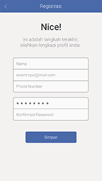
To start using this iLabuhanbatu application, first do the steps as mentioned above; if you have not registered in iLabuhanbatu application yet, click the "Connect with Facebook" button or "Connect" with Email" button and you will be redirected to registration form page..
Forgot Password
"Forgot Password" is a feature that will be used when user forget the password. To use this feature is quite easy, the user only need to input the registered email in iLabuhanbatu. Then there will be email from noreply@aksaramaya.com contains how to reset the password.
Dashboard
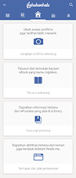
Dashboard consists of several features like profile, notification, balance, badges status, book to finish, followers list, following list.
Profile Setting
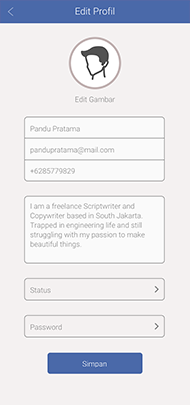
Profile Setting is the profile account setting. Some settings are available like avatar, username, email address, live in, password, biography.
Edit Photo
"Edit Photo" is used to change profile picture
Edit Password
"Edit Password" is used to change old password to the new one.
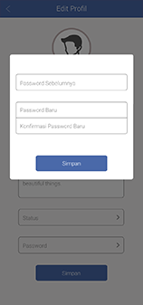
Notification
Notification is a private informative notification, the informative notification are:
- Comment
- Share-Recommend
- New Follower
- Status Badges
- Message
- Like Comment
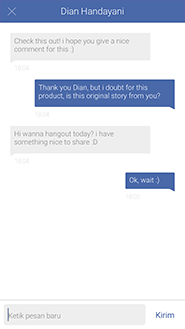
Inbox is a feature to have conversation with other users. To start conversation with other user for the first time, can be performed by going to user profile of the user to have conversation with, click on the "Chat" icon ( )
on the upper right side of User Profile, it will bring you to chat page.
)
on the upper right side of User Profile, it will bring you to chat page.
Badges Status
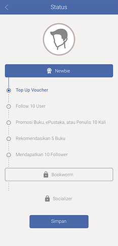
Badge status is user"s read-level. There are several read-level in iLabuhanbatu which are Newbie, Bookworm, and Socializer.
If user wants to up the level, user shall meet several requirements.
Newbie to Bookworm
- Complete Profile
- Posted > 5 Comments
- Download 10 books to shelf
- Open/Read 5 Books
- Topped Up Voucher
Bookworm to Socializer
- Follow 10 People
- Share 10 Times
- Recommend 5 Books
- Get 10 Followers
Book to Finish
Book to Finish merupakan kumpulan buku-buku yang telah dimiliki. Di dalam book to finish terdapat informasi persentase baca buku, serta batas akhir pinjam buku (bila buku tersebut dipinjam dari ePustaka dan rental di store)
Followers/Following List
Followers/Following List is a list of users whom followed you, or you followed.
Collection
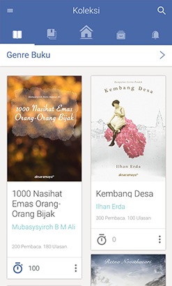
Collection is a book catalogue in iLabuhanbatu. Collection consists of several features like category, search book, recommended book.
- Search Book
"Search Book" is used to search a book. To do searching, enter the keyword of the book, for example: searching book with keyword "physics". Below is the display that will be shown with "physics" keyword.
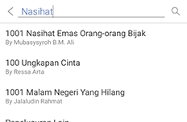 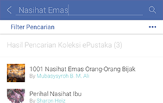
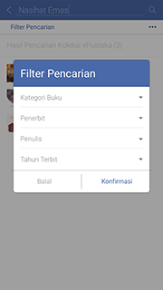 
Books Category
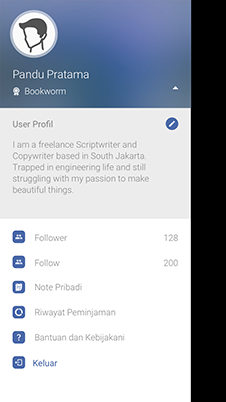
To search book based on its category, click one of the available categories on the left side.
ePustaka
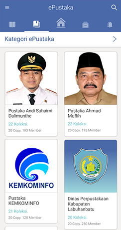 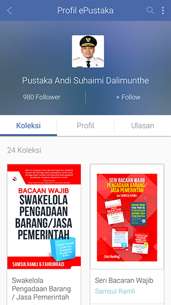
ePustaka is a collection of institutions or publishers that have been cooperating with iLabuhanbatu. Look at the picture above, in ePustaka page, there are list of several institutions/publishers that have already in cooperation with iLabuhanbatu. To go into ePustaka page, select "ePustaka" tab in the library.
Select one of ePustaka, for example: Pustakamaya, then ePustaka details will be shown including some features like Follow ePustaka, Book List, Followers List, Comment List, Join ePustaka.
Book Details
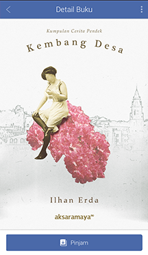 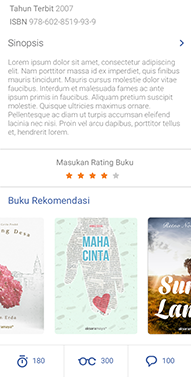
To obtain the details of a book, select a cover of the book. Then detail information will be shown, which are book title, book author, ISBN, publisher, publishing date, book rating, book price, synopsis, Wish List (List contains of users who want the book), is Read (users who are reading the book), has Read (users who are already finished the book), review.
Share
"Share" is a feature to share various information of book details. User can share the information through facebook, twitter, email, and recommend.
Share Recommend
Share recommend is used to share book information by sending notification to users whom you followed, or followed you.
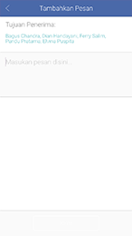
Follow/Unfollow
Follow is used to follow and gain latest information form other user, ePustaka, Author. How to do it?
Go to profile user consists of user information (username, badges status, description, wish list, follower list, following list, reading list and follow button). You need to click "Follow" button to follow other user.
Shelf
Shelf is a collection of books that you have owned (current), collection of books that you desire (want), and collection of books that you have finished (history).
- Current is collections of books that are already owned. On Current, user can delete the collections of books that may not wanted to be read anymore, to delete collections of books is really easy by using info button in current page.
- Want is collections of books that are desired by user but have not got the opportunity to borrow it yet
- History is collections of books that have finished with percentage of book finish reach 100%. On history, user can also delete collections of books that have finished.
eReader
eReader is a feature to read books equipped with TOC (Table Of Content), Change Font Style, Change Font Type, Line Spasing, Change Theme, Bookmark, Search..
- TOC (Table Of Content)
Table Of Content is the list of books, look below:
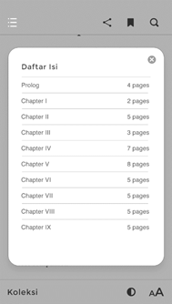
- Bookmark
Bookmark is a mark on your book, used to mark pages in your book to ease you find the pages when you want to read it again. To recognize the marked pages is quite easy.
From above image, you can see the difference between the book with bookmark and without bookmark.
- Change Style
Change Style is a feature to change Font Style, Font Size, Line Spasing.
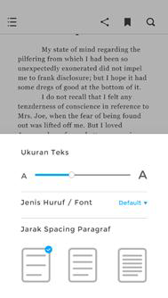
- Change Theme
Change Theme is a feature to change background theme, brightness.
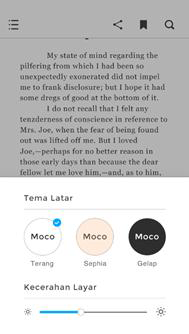
There are 3 kinds of themes for background theme, which are white, sepia, night.
- Search
Search is used to find words. Click the "Search" button () on upper right side. Type the keyword. The matching text with the keyword will be marked with pink color.
- Memo
"Memo" is used to mark important words in the book. Block the important words, and right click on the area. Option "Memo" and "Share" will be shown. Click on "Memo" option and the words are already inputted to memo.
- Share Facebook
Share Text in the reader is used to share words from the book. Text can be shared through 4 media, which are Facebook, Twitter, Link-In, and Email. Block the words that will be shared. Right click on the words, then click one of the media to share the words. Browser page with the words will be shown.
Feeds
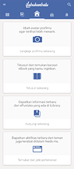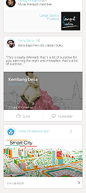
Feed is a collection of public information. Information included in feed are:
- When followers add books
- When followers join ePustaka
- When new books are added in the followed ePustaka
- When there are changes in User Badges Status
- When receiving notification from iLabuhanbatu admin
Author Profile
"Author Profile" is author page that contains brief profile, date of birth, age, and books written by the author. On author page, follow button is also provided so user can directly interact with the author.
User Profile
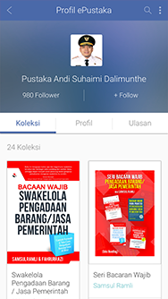
"User Profile" is user page that contains brief profile, badges status (read level), City, Wish List, Read List, Followers List, Following List. On user profile, follow button is also provided so user can directly interact with other users.
Note
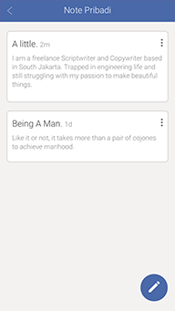
Note is used to keep notes.
iLabuhanbatu Offline
This iLabuhanbatu application can be used with internet connection, or online, iLabuhanbatu can also be used without internet connection, or offline. However, there is some restriction when iLabuhanbatu is offline, iLabuhanbatu can only be used to read books with the following conditions:
- Already signed-in to iLabuhanbatu when still using iLabuhanbatu
- Already downloaded the books.